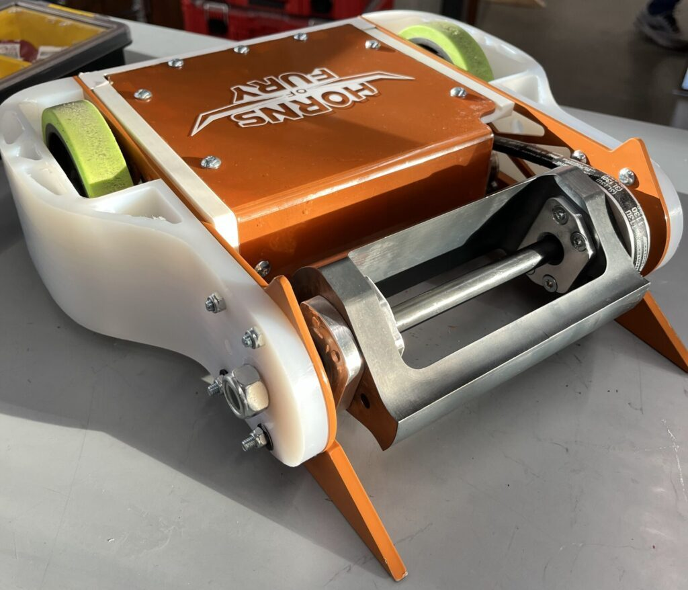
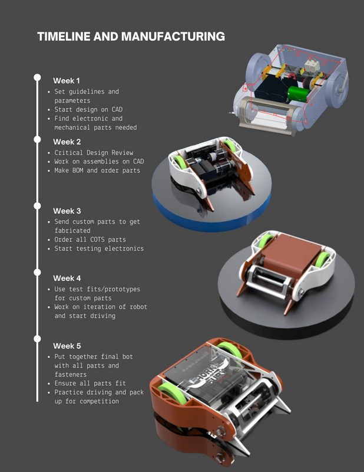
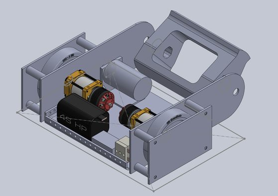
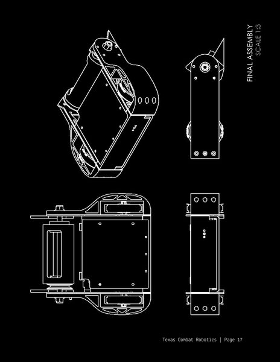
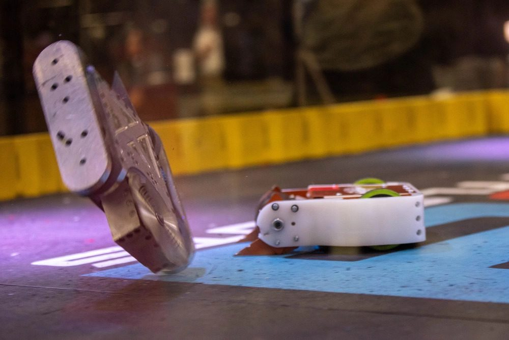
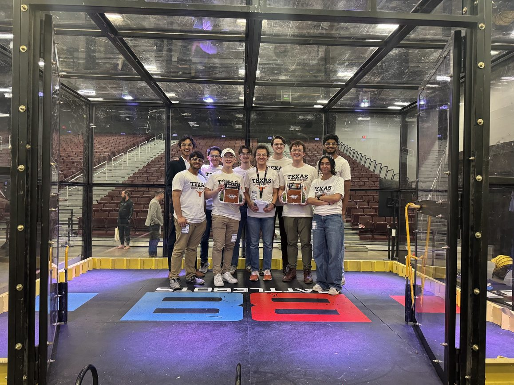

Horns of Fury
UT's first 15 lb combat robot. Five weeks from a blank CAD file to the arena at the first SXSW Battle Bots Metal Mayhem.
- Role
- Mechanical Design Lead
- Team
- Texas Combat Robotics
- Weight class
- 15 lb
- Timeline
- 5 weeks, concept → competition
- Tools
- SolidWorks · CNC mill · Sheet metal brake · 3D printing
- Result
- 2nd in group

Design, build and fight a 15 lb robot on a five-week clock.
The challenge
- Design and manufacture a 15 lb combat robot for the first SXSW Battle Bots Metal Mayhem event
- Complete the full design cycle in 5 weeks, from project start to competition day
The approach
- SolidWorks modeling and assembly management to design custom parts and integrate COTS components
- DFM and engineering fundamentals for a robot that's robust and easy to repair
- Parts made by CNC milling, sheet metal bending and 3D printing
The outcome
- Placed 2nd in our group against experienced combat robotics teams
- Documented the whole design process in an engineering binder
Five weeks, planned backwards from competition day.
- Week 1
Requirements & concept
Set guidelines and design parameters, started the CAD, and identified the electronic and mechanical parts we'd need.
- Week 2
Critical design review
Held a CDR, built out the assemblies in CAD, then made the BOM and placed orders.
- Week 3
Fabrication kickoff
Sent custom parts out for fabrication, ordered all COTS parts, and started testing the electronics.
- Week 4
Test fits & iteration
Used test fits and prototypes of the custom parts, iterated on the robot, and started driving.
- Week 5
Final build
Assembled the final bot with every part and fastener, checked all the fits, practiced driving, and packed up for competition.

Built to take hits and to be fixed between them.
In combat robotics, something will break. The question is whether you can fix it before the next match. I organized the SolidWorks model so custom parts and off-the-shelf components came together cleanly as one assembly. Then I applied DFM principles so every custom part could be made with the tools we had and swapped quickly in the pits.


Three processes, one robot.
CNC milling
Precision machined custom parts.
Sheet metal
Bent sheet metal parts that are fast to remake.
3D printing
Quick prototypes and test-fit parts.

